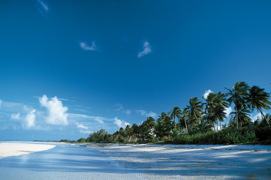

Neither of the images below is addressed by a path this converter could
open on its own. Each is written the way it would be in a template
— img/denker.png — and turned into a file on
disk by the link_callback this page describes. The
documentation build passes one in.

Without the callback the converter has nothing to fetch and both images would be missing from this page.